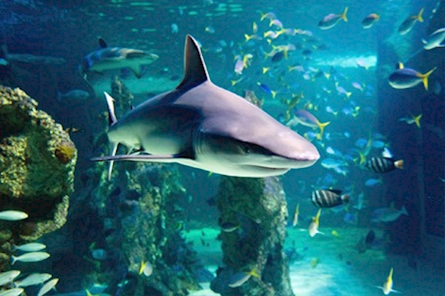
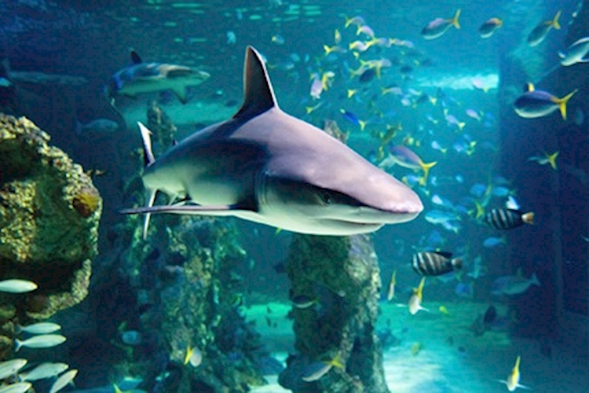

world places
POPULAR PLACES IN WORLD
1.SINGAPORE
 

More places in singapore===>
==>Marina Bay Sands.
==>Gardens by the Bay.
==>Botanic Gardens.
==>Singapore Zoo.
==>Orchard Road.
==>Singapore Flyer.
==>Raffles Hotel Singapore.
==>Chinatown.
More places in SINGAPORE
2.NEW YARK


More places in New york===>
==>Watkins Glen State Park.
==>Ausable Chasm.
==>Whiteface Mountain.
==>Breakneck Ridge.
==>Giant Ledge.
==>Dia: Beacon.
==>Storm King Art Center.
==>Eternal Flame Falls.
More places in NEW YARK
3.MALAYSIA


More places in Malaysia===>
==>Petronas Twin Towers,Kuala Lumpur.
==>Batu Caves, Selangor.
==>Mount Kinabalu, Sabah.
==>Perhentian Islands.
==>Sipadan Island.
==>Gunung Mulu National Park, Sarawak.
==>Penang Hill.
==>Sepilok Orangutan Rehabilitation Centre, Sandakan.
More places in MALAYSIA
More places in World===>
==>South Island, New Zealand.
==>Paris.
==>Bora Bora.
==>Maui.
==>Tahiti.
==>London.
==>Rome.
==>Phuket.
More places in WORLD